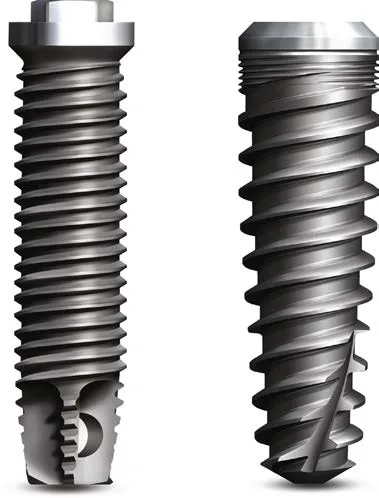

نسخه استخراجشده؛ ترجمه یا تأیید علمی انجام نشده است. وضعیت: captured

بدنهی تیپر در برابر استوانهای دو مزیت دارد: ثبات اولیهی بهتر و همخوانی بیشتر با آناتومی محل. مطالعات تجربی، برتری ثبات اولیهی تیپر را نشان دادهاند.
رزوهها را با سه ویژگی توصیف میکنند: شکل، گام (فاصلهی نقطهای از یک رزوه تا نقطهی متناظر در رزوهی بعدی، موازی با محور) و عمق.
شکل رزوه تعیین میکند نیرو چگونه منتقل شود: رزوهی ویشکل قوی است ولی نیروی برشی بیشتری به استخوان میدهد؛ رزوهی مربعی نیرو را بیشتر فشاری منتقل میکند و برش کمتری میسازد؛ باتِرِس برش کم را با ثبات اولیهی عالی جمع میکند. و گام کوچکتر سطح تماس را زیاد و توزیع تنش را بهتر میکند.
یک قاعدهی کلیدی: پس از آنکه حداقل طول لازم برای تثبیت اولیه تأمین شد، قطر مهمتر از طول اضافه است. دلیلش ساده است — بیشترین تنش در ناحیهی کرستال متمرکز میشود و افزایش قطر، سطح تماس با همان ناحیهی پرتنش را زیاد میکند. برای طول و هندسهی ثابت، ایمپلنت پهنتر تنش کمتری تولید میکند.
کرست ماژول — بخش بالایی بدنه — نقشی فراتر از ظاهرش دارد. کالر صاف در این ناحیه میتواند نیروی برشی به استخوان منتقل کند، و باریک شدن کرست ماژول با کم کردن قطر و سطح تماس با کورتیکال، تنش کرستال را افزایش میدهد. در مقابل، میکروثرد — رزوههای ریز با گام کوچک در ناحیهی کالر — نیرو را در کرست پخش میکند و به حفظ ارتفاع استخوان کرستال کمک میکند.
و نکتهای که تا انتهای این تخصص همراهت خواهد بود: تحلیل استخوانِ ناشی از فضای زیستی ظرف یک ماه رخ میدهد، چه ایمپلنت بارگذاری شود چه نشود، و به طراحی کرست ماژول و موقعیت اتصال اباتمنت نسبت به استخوان بستگی دارد — نه به تراکم استخوان.